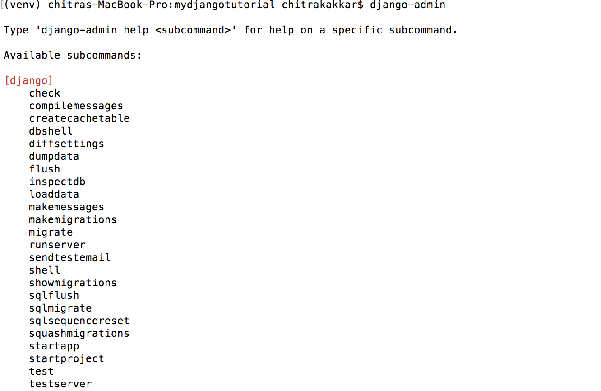
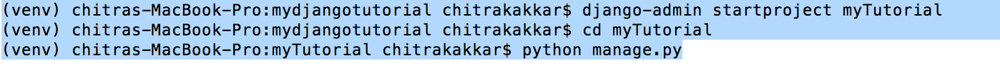
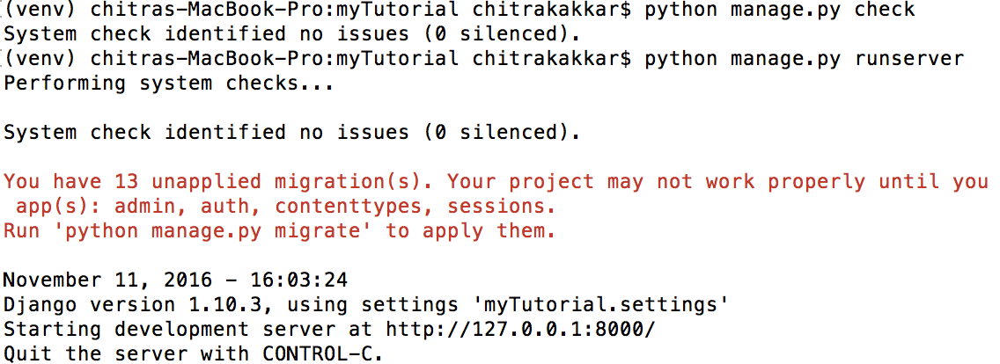
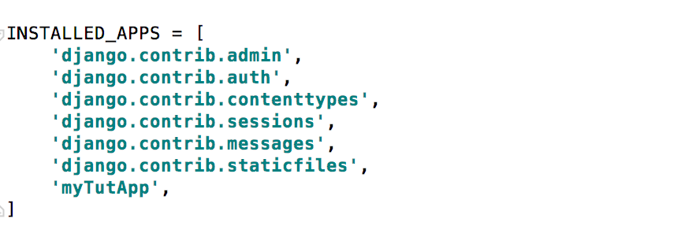
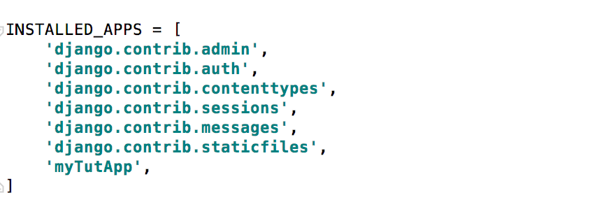

Introducing Django
Django is a web-framework which is really awesome at building dynamic website really fast.It creates high-security web applications which is backed by a database that includes some kind of interactivity that operates through browser. Django is written in python so we need to install python and you should have python installed on your computer. You also need a code editor like Pycharm on your computer. Django lets you build deep, dynamic, interesting sites in an extremely short time. Django is designed to let you focus on the fun, interesting parts of your job while easing the pain of the repetitive bits. In doing so, it provides high-level abstractions of common Web development patterns, shortcuts for frequent programming tasks, and clear conventions on how to solve problems. At the same time, Django tries to stay out of your way, letting you work outside the scope of the framework as needed. Django comes with common functionality like *Authentication: It handles user accounts, groups, permissions and cookie-based user sessions. *URL routing, *a templating system, *an object-relational mapper (ORM), and *database schema migrations (as of version 1.7) are all included with the Django framework. Better than the Flask framework which requires a separate library such as Flask-Login to perform user authentication.
Djaongo history
Django grew organically from real-world applications written by a Web development team in Lawrence, Kansas, USA. It was born in the fall of 2003, when the Web programmers at the Lawrence Journal-World newspaper, Adrian Holovaty and Simon Willison, began using Python to build applications. The World Online team, responsible for the production and maintenance of several local news sites, thrived in a development environment dictated by journalism deadlines. For the sites – including LJWorld.com, Lawrence.com and KUsports.com – journalists (and management) demanded that features be added and entire applications be built on an intensely fast schedule, often with only days’ or hours’ notice. Thus, Simon and Adrian developed a time-saving Web development framework out of necessity – it was the only way they could build maintainable applications under the extreme deadlines. In summer 2005, after having developed this framework to a point where it was efficiently powering most of World Online’s sites, the team, which now included Jacob Kaplan-Moss, decided to release the framework as open source software. They released it in July 2005 and named it Django, after the jazz guitarist Django Reinhardt.
Required Language &Editor
At its core, Django is simply a collection of libraries written in the Python programming language. To develop a site using Django, you write Python code that uses these libraries. Learning Django, then, is a matter of learning how to program in Python and understanding how the Django libraries work. If you don’t have experience programming in Python, you’re in for a treat. It’s easy to learn and a joy to use! Although this book doesn’t include a full Python tutorial, it highlights Python features and functionality where appropriate, particularly when code doesn’t immediately make sense. Still, I recommend you read the official Python tutorial. Django is written in python so we need to install python and you should have python installed on your computer. You also need a code editor like Pycharm on your computer. Django need a code editor because the first reason is that code needs to be plain text and second are specialized for editing code, so they can provide helpful features like highlighting code with color according to its meaning, or automatically closing quotes for you.
Virtual Environment
A Virtual Environment is a tool to keep the dependencies required by different projects in separate places, by creating virtual Python environments for them. virtualenv is a tool to create isolated Python environments. virtualenv creates a folder which contains all the necessary executables to use the packages that a Python project would need. Follow the steps to install Virtual environment on a your machine:
pip install python
mkdir project
cd project
pip install virtualenv
activate virtualenv(To begin using the virtual environment, it needs to be activated:)
The name of the current virtual environment will now appear on the left of the prompt (e.g. (venv)Your-Computer:your_project UserName$) to let you know that it’s active. From now on, any package that you install using pip will be placed in the venv folder, isolated from the global Python installation.
Deactivate Virtualenv
To delete a virtual environment, just delete its folder.
rm -rf venv
After a while, though, you might end up with a lot of virtual environments littered across your system, and its possible you’ll forget their names or where they were placed.
Installation
After virtual environment is installed in the directory you want to use your project, we need to install django. It's wise and recommended that for every virtual environment, we should install django separately
(myvenv) ~$ pip install django
Downloading/unpacking django
Installing collected packages: django
Successfully installed django
Cleaning up...
After Django is installed, we can check the django-admin commands which can let you do everything.Here is the command you can use to check the django -admin command and that's how it looks like

You can see that with Django-admin, you get all these command to use and to start a new project we can use couple of commands like:

Then run python manage.py check and then you can run server which would run the server and gets you the url for the webpage. Here are the steps one can use to to check and run server

After Django standard package is installed, we can take a look at the files which contribute towards making the web-application:
Settings.py
A Django settings file contains all the configuration of your Django installation. This document explains how settings work and which settings are available.
After creating an application, we also need to tell Django that it should use it. We do that in the file mysite/settings.py. We need to find INSTALLED_APPS and add a line containing 'myTutApp', just above ]. So the final product should look like this:

urls
li>
wsgi.py
views.py
tests.py
apps.py
admin.py
Templates.py
After Django standard package is installed, we can take a look at the files which contribute towards making the web-application:
Settings.py
A Django settings file contains all the configuration of your Django installation. This document explains how settings work and which settings are available. After creating an application, we also need to tell Django that it should use it. We do that in the file mysite/settings.py. We need to find INSTALLED_APPS and add a line containing 'myTutApp', just above ]. So the final product should look like this: 
urls li>
wsgi.py
views.py
tests.py
apps.py
admin.py
Templates.py